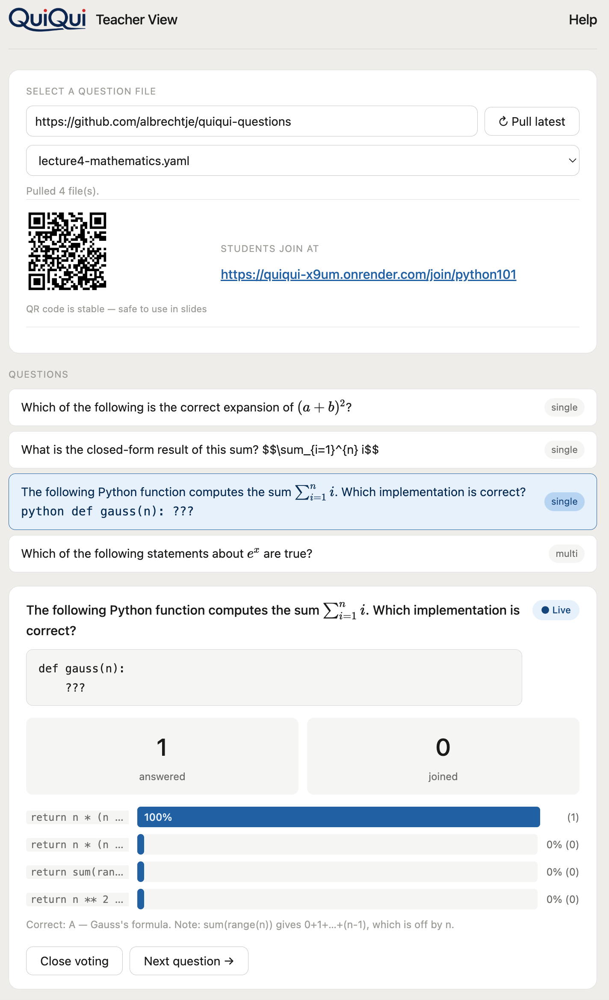
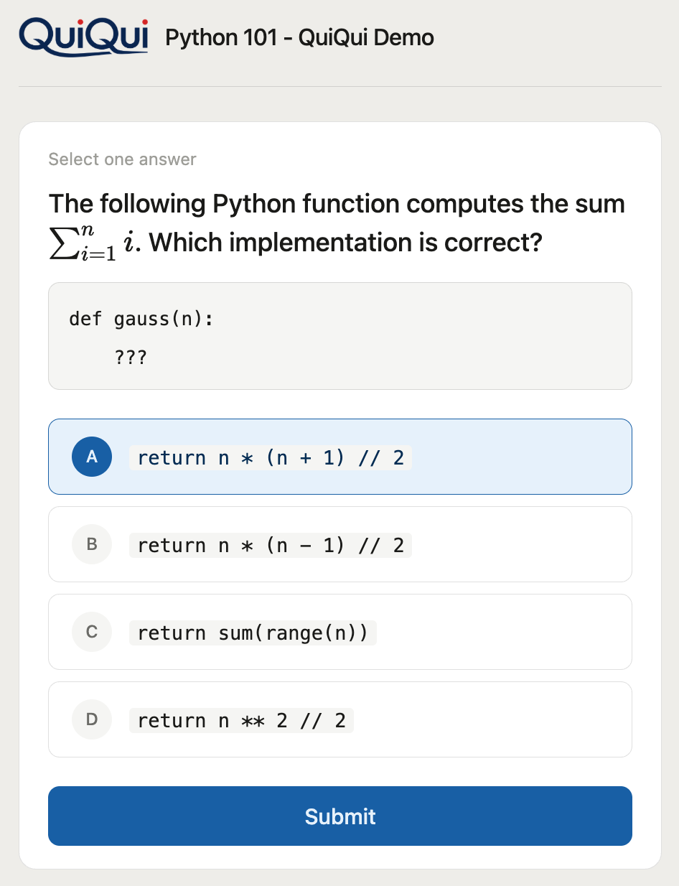

Live audience response for university lectures
Pose a question, students answer on their phones, the class sees live results — no login, no app install.
Quickstart for Lecturers →Are you a lecturer who wants to use this hosted instance?
Ask for the URL to start your own session.
Screenshots



Features
No student loginScan a QR code or visit a URL — that's it.
Live resultsBar chart updates in real time as answers come in.
Questions in GitEdit a YAML file in GitHub, pull latest in the teacher view.
Markdown & LaTeXCode blocks, inline code, and math expressions supported.
No databaseAll session state is in memory — nothing persists.
Open sourceAGPL-3.0 — free to use, self-host, and modify.